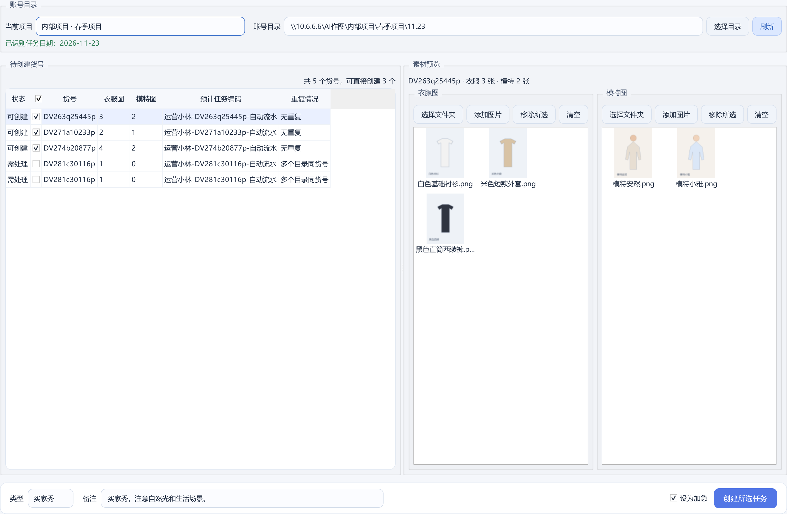
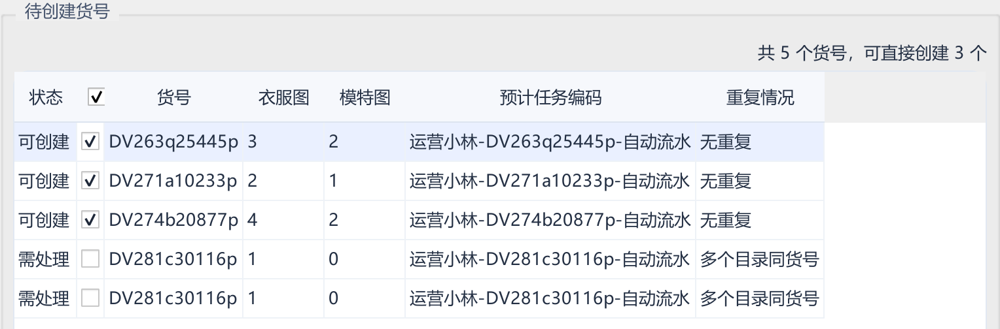
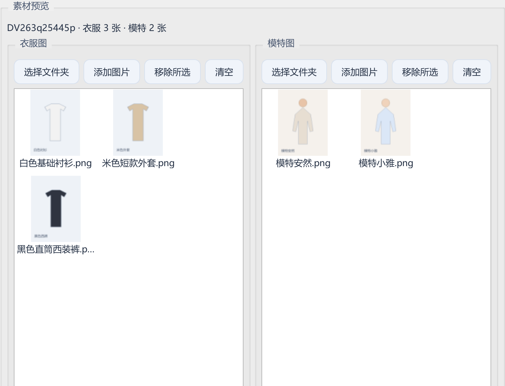
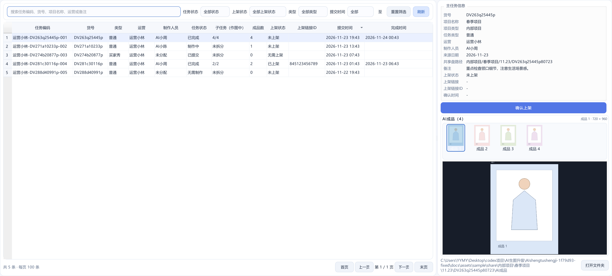
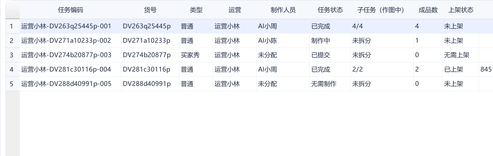
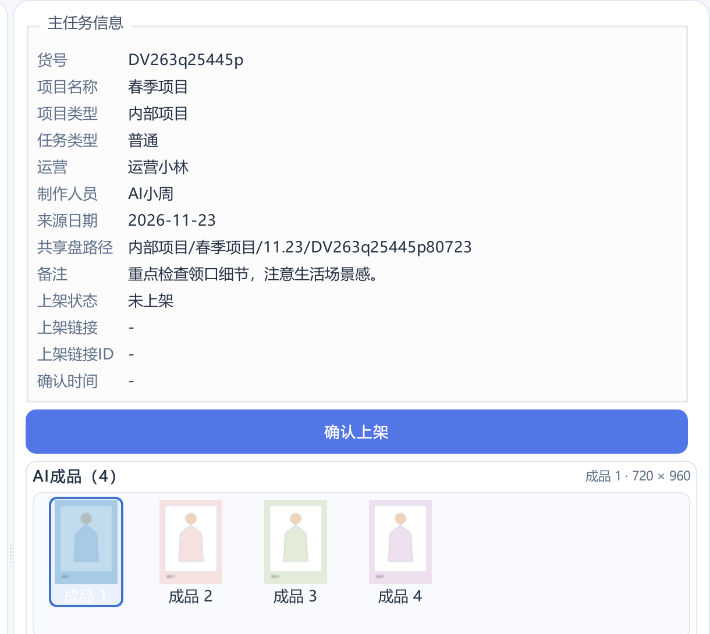
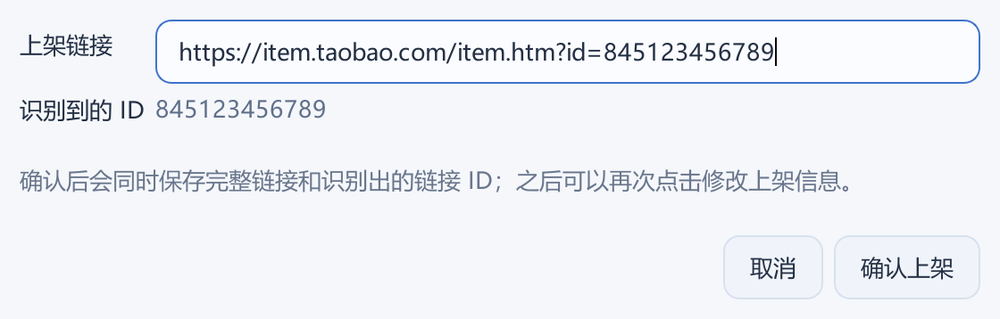

任务提交 · 提交记录 · 业务全流程
双击桌面上的亦欣 AI 生图工作台，出现登录窗口后输入账号和密码。账号由管理员开通，忘记密码请联系管理员重置。
如果管理员要求首次登录修改密码，系统会先弹出改密窗口，改完才能进入工作台。
运营账号默认只使用顶部两个菜单：
| 菜单 | 用途 |
|---|---|
| 任务提交 | 从共享盘扫描当天货号，勾选后提交成主任务。 |
| 提交记录 | 查看自己提交的主任务、AI 成品，任务完成后确认上架。 |
内部项目\项目名\月.日\货号\衣服图、模特图。| 角色 | 负责什么 | 不负责什么 |
|---|---|---|
| 运营 | 建共享盘目录、提交主任务、填写类型/备注/加急、确认上架。 | 领取任务、配对素材、生图、改图。 |
| AI 制作 | 在“待分配”领取主任务，在“AI生图”里配对、提交生成、处理失败重试。 | 修改运营提交的货号和上架信息。 |
| 管理员 | 开通账号、分配项目、配置共享盘和加急额度。 | 日常不代替运营提交任务。 |
| 环节 | 运营要做 | 运营不要做 |
|---|---|---|
| 准备素材 | 目录名、货号、图片文件名尽量规范；衣服图和模特图分开放。 | 不要把旧图、备份图混进正式目录。 |
| 提交任务 | 逐个货号确认类型、备注、加急；提交前核对数量和图片。 | 不要重复提交同一个货号；提交后不要改共享盘目录名。 |
| 等待制作 | 在提交记录里查看“任务状态”和“子任务（作图中）”。 | 不要反复催同一任务，也不要自己去 AI 页面操作。 |
| 确认上架 | 主任务完成后检查 AI 成品，确认无误后填写完整链接。 | 不要在任务未完成时要求上架；不要把链接填成短链以外的临时地址。 |
| 状态 | 含义 | 运营要关注什么 |
|---|---|---|
| 已提交 | 主任务已创建，还没有 AI 领取。 | 耐心等待；确认货号、类型、备注没有填错。 |
| 制作中 | 已有 AI 领取并开始制作。 | 可查看子任务进度，但不要再修改该主任务。 |
| 待审核 | 保留状态；当前版本生图成功后子任务自动完成，通常不会长时间停留在这里。 | 如出现，联系管理员确认。 |
| 已完成 | 全部子任务完成，或 AI 标记了无需制作。 | 查看 AI 成品，准备确认上架。 |
| 无需制作 | AI 判断这个主任务不需要做图，主动跳过。 | 如需重新做图，联系管理员处理。 |
| 已取消 | 主任务已被取消。 | 确认是否还需要，需要就重新提交。 |
| 术语 | 白话解释 |
|---|---|
| 主任务 | 一个货号的一次提交。一个货号只对应一个主任务，提交记录里看到的就是它。 |
| 子任务 | AI 配好“哪几张衣服配哪个模特”后，每一组配对生成一个子任务，用来生图。 |
| 配对 | 决定“哪些衣服图 + 哪张模特图”一起生成一张图。 |
| 轮次 | 一次生成请求。失败后可以重试，每次重试算一个新轮次。 |
| AI 成品 | 保存在货号目录下 AI成品 文件夹里的最终图片。 |
| 上架链接 ID | 从商品链接里自动识别出的编号，用于和电商后台核对。 |

| 位置 | 说明 |
|---|---|
| 当前项目 | 管理员分配给你的项目，例如“内部项目 · 春季项目”。切换项目后目录会跟着切换。 |
| 账号目录 | 当天要扫描的日期目录。系统默认定位到项目根目录\月.日，也可以点“选择目录”手动选。 |
| 选择目录 | 手动选择日期目录；系统会自动切换到该目录所属的项目。 |
| 刷新 | 共享盘新增或替换图片后，点刷新重新扫描。 |
| 日期提示 | “已识别任务日期：2026-11-23”表示目录名能被识别；显示橙色提示时说明目录末尾不是日期，任务会按今天计算。 |
\\10.6.6.6\AI作图\内部项目\<项目名称>\<月.日>\<货号>\衣服图
\\10.6.6.6\AI作图\内部项目\<项目名称>\<月.日>\<货号>\模特图
\\10.6.6.6\AI作图\外部项目\<项目名称>\<月.日>\<货号>\衣服图
\\10.6.6.6\AI作图\外部项目\<项目名称>\<月.日>\<货号>\模特图11.10、2026.11.10、11-10、2026-11-10、20261110。衣服图、衣服、garment。模特图、模特、model，英文不区分大小写。备份、backup、副本、temp、tmp、临时、缓存 以及以点开头的隐藏目录。内部项目的货号由以下几段组成，识别到第二个分隔字母就停止，后面的字符全部忽略：
| 品牌 | 年份 | 季节 | 分隔字母 | 流水号 | 第二个分隔字母 | 后面全部忽略 |
|---|---|---|---|---|---|---|
| DV | 26 | 3 | q | 25445 | p | 80723、-备注、颜色码等 |
季节代码：1 春、2 夏、3 秋、4 冬。因此 DV263q25445p80723 识别出的货号是 DV263q25445p。
DV263q25445p80723、DV263q25445p8072、DV263q25445p80723-备注 会被识别成同一个货号 DV263q25445p。如果同一天这几个目录同时存在，系统会标成“多个目录同货号”，两边都不能勾选，请只保留一个目录。

| 列 | 含义 |
|---|---|
| 状态 | 可创建：资料齐全；需处理：缺衣服图、重复货号或图片过多；货号不符：目录名不符合货号规则。 |
| 勾选框 | 只有“可创建”的行才能勾选。表头的勾选框可以全选或取消全选。 |
| 货号 | 系统识别出的货号（已截断到第二个分隔字母）。 |
| 衣服图 | 该货号扫描到的衣服图数量。 |
| 模特图 | 该货号扫描到的模特图数量。模特图为 0 也能提交，但 AI 生图时没有人物可配对。 |
| 预计任务编码 | 提交后生成的编码格式：账号姓名-货号-当日流水号，流水号以实际创建结果为准。 |
| 重复情况 | “无重复”、“已有 N 个任务”（当天已提交过）或“多个目录同货号”。 |
列表上方会汇总：“共 N 个货号，可直接创建 M 个”。如果出现“货号格式不符，未识别（仅提示）”，说明目录名不合法，系统不会提交这些目录。
先在列表里选中一个货号，再在底部操作栏设置。设置只对当前选中的货号生效；切换到别的货号时，各货号会分别保留自己的设置。
| 字段 | 怎么填 |
|---|---|
| 类型 | 普通或买家秀。买家秀会在提交记录里单独标识，也支持按类型筛选。 |
| 备注 | 选填，写给 AI 制作的说明，例如“领口重点检查”“需要生活场景感”。AI 在 AI 生图页面会看到这段备注（浅黄底色提示）。 |
| 设为加急 | 勾选后主任务进入加急队列，待分配页会置顶显示。加急额度按天计算，由管理员设置；额度不足时系统会阻止创建。 |
如果当天已经提交过同一个货号，系统会弹出“发现重复货号”，可以选择覆盖或取消。只有主任务还处于“已提交”且没有被 AI 领取时才能覆盖；已被领取的任务不能覆盖，请联系管理员处理。
| 提示 | 原因与处理 |
|---|---|
| 货号不符 | 目录名不符合“品牌 2 位 + 年份 2 位 + 季节 1 位 + 分隔字母 + 流水号 + 第二个分隔字母”，例如把季节写成了 5–9。修改目录名后点刷新。 |
| 多个目录同货号 | 同一天有多个目录截断后是同一个货号。只保留一个目录，其余改名或移走。 |
| 需处理 | 缺衣服图、衣服图超过 13 张，或货号重复。鼠标停留在“状态”上可以看到具体原因。 |
| 衣服图不能为空 | 该货号没有扫描到衣服图。补图到“衣服图”目录后刷新。 |
| 单个模特任务最多 13 张衣服图 | 一个货号最多 13 张衣服图，超出的请拆分或删减。 |
| 加急额度不足 | 今天可用的加急数量不够。减少加急勾选，或联系管理员调整额度。 |
| 目录不属于当前项目 | 所选日期目录不在当前项目下。切换“当前项目”后重新选择目录。 |
| 无法访问共享盘 | 共享盘未连接或没有权限。检查网络和共享盘映射后重试。 |

选中货号后，右侧会显示“衣服图”和“模特图”两个预览区，标题会显示张数。可以点击缩略图查看大图。
| 按钮 | 作用 |
|---|---|
| 选择文件夹 | 把一个文件夹里的图片批量导入当前货号。 |
| 添加图片 | 选择一张或多张图片导入。 |
| 移除所选 | 从当前货号中移除选中的图片。 |
| 清空 | 清空当前货号的衣服图或模特图。 |

页面分三块：
AI成品 文件夹的图片。

| 筛选项 | 说明 |
|---|---|
| 搜索框 | 可按任务编码、货号、项目名称、运营姓名或备注搜索。 |
| 任务状态 | 全部状态、已提交、制作中、待审核、已完成、无需制作、已取消。 |
| 上架状态 | 全部上架状态、未上架、已上架。 |
| 类型 | 全部类型、普通、买家秀。 |
| 提交时间 | 按提交时间筛选，见下方快捷范围。 |
| 重置筛选 | 把搜索、任务状态、上架状态、类型、时间范围全部恢复为默认。 |
| 刷新 | 重新读取最新任务状态和上架信息。 |
| 快捷范围 | 实际范围 |
|---|---|
| 全部 | 不限制提交时间。 |
| 近实时 | 今天提交的任务。 |
| 近 7 天 | 含今天在内的最近 7 个自然日。 |
| 近 30 天 | 含今天在内的最近 30 个自然日。 |
| 本周 | 本周一到今天。 |
| 本月 | 本月 1 日到今天。 |
| 自定义 | 选择“自定义”后出现开始日期和结束日期，可任选一端或两端。 |
列表只显示主任务。默认按提交时间从新到旧排列，点击带箭头的表头可以改变排序。
| 列 | 含义 |
|---|---|
| 任务编码 | 提交时自动生成，格式 账号姓名-货号-流水号。 |
| 货号 | 系统识别出的货号。 |
| 类型 | 普通或买家秀。 |
| 运营 | 提交该主任务的人。 |
| 制作人员 | 领取该主任务的 AI 人员；未领取显示“未分配”。 |
| 任务状态 | 已提交、制作中、待审核、已完成、无需制作、已取消。 |
| 子任务（作图中） | AI 配对后显示“已完成子任务数/子任务总数”，例如 4/4；还没配对时显示未拆分，这是正常现象。 |
| 成品数 | 该主任务已产生的成品图数量。 |
| 上架状态 | 未上架 / 已上架；买家秀任务显示无需上架。 |
| 上架链接 ID | 确认上架后，从链接里识别出的编号。 |
| 提交时间 | 主任务创建时间。 |
| 完成时间 | 主任务完成时间；未完成时为空。 |
点选左侧任意一行后，右上角显示该主任务的详细信息：
| 字段 | 说明 |
|---|---|
| 货号 | 系统识别的货号。 |
| 项目名称 / 项目类型 | 所属共享盘项目和内部/外部类型。 |
| 任务类型 | 普通或买家秀。 |
| 运营 / 制作人员 | 提交人和领取的 AI 人员。 |
| 来源日期 | 共享盘日期目录对应的任务日期。 |
| 共享盘路径 | 该主任务对应的货号目录（相对共享盘根目录）。 |
| 备注 | 提交时填写的说明；没填显示“无备注”。 |
| 上架状态 / 上架链接 / 上架链接 ID / 确认时间 | 上架信息；未上架时为空。 |
右下角“AI 成品”会扫描 货号目录\AI成品 文件夹：
AI成品 目录。先确认“任务状态”和“制作人员”，再联系对应的 AI 人员。
主任务状态变成已完成后，右上角的确认上架按钮才可用。只有提交该任务的运营本人或管理员可以操作。

已经确认过的主任务，按钮会变成修改上架信息，再次点击可以改链接并重新识别 ID。
?id=845123456789。这是正常的。提交阶段一个货号只生成一个主任务，保存全部衣服图和模特图，不生成子任务。AI 在“AI生图”里配对并提交生成时，才会按配对创建子任务。列表里显示“未拆分”就表示还没配对。
分母是 AI 创建的配对数量，分子是已经完成的数量。例如 3 套衣服配 2 个模特，可能拆成 4 个子任务；全部完成时显示 4/4。
先看“任务状态”和“制作人员”。如果是“已提交”且“未分配”，说明还没有 AI 领取；如果是“制作中”，说明还在生成；如果已经“已完成”但 AI 成品为空，点“打开文件夹”确认目录，再联系制作人员或管理员。
只有同时满足两个条件才能点：主任务状态是已完成，并且你是提交人本人或管理员。鼠标停留在按钮上会显示具体原因。
买家秀不需要上架，系统会把上架状态显示为无需上架，并隐藏确认按钮。这是正常现象，不用处理。
货号只识别到第二个分隔字母，几个目录前面的部分相同就会被视为同一个货号。系统为防止重复提交，会把它们都标成需处理。请只保留一个目录，其余改名或移走，然后点刷新。
检查目录名的第 1–2 位品牌、第 3–4 位年份、第 5 位季节（只能是 1–4）、第 6 位分隔字母、后面的流水号，以及流水号后的第二个分隔字母。任何一段不符合规则都不会识别。
加急额度按天计算。可以先把不着急的货号改成普通，或者联系管理员调整当天额度。不要反复点击创建，额度不足时系统不会生成任务。
如果主任务还是“已提交”且没有被领取，可以重新提交同一货号并在“发现重复货号”窗口选择覆盖。如果已经被领取，不能覆盖，请联系管理员说明情况。
依次检查：目录名是否是“衣服图/衣服/garment”和“模特图/模特/model”；图片格式是否是 PNG、JPG、JPEG、WEBP、BMP、TIF/TIFF；文件是否放在被跳过的目录（备份、backup、副本、temp、tmp、临时、缓存、隐藏目录）。改完点刷新。
当前版本不支持运营之间转单。提交人本人或管理员才能确认上架；需要换人时联系管理员处理。
| 片段 | 示例 | 规则 |
|---|---|---|
| 品牌 | DV | 2 位字母 |
| 年份 | 26 | 2 位数字 |
| 季节 | 3 | 1 春、2 夏、3 秋、4 冬 |
| 分隔字母 | q | 1 位字母 |
| 流水号 | 25445 | 数字 |
| 第二个分隔字母 | p | 1 位字母，货号到此结束 |
内部项目\项目名\月.日\货号\衣服图
内部项目\项目名\月.日\货号\模特图
外部项目\项目名\月.日\货号\衣服图
外部项目\项目名\月.日\货号\模特图
货号目录\AI成品\_r001_01_哈希.png| 术语 | 解释 |
|---|---|
| 主任务 | 一个货号的一次提交。 |
| 子任务 | AI 配对后生成的一个生图任务。 |
| 配对 | 衣服图和模特图的组合关系。 |
| 轮次 | 一次生成请求，失败后可重试。 |
| AI 成品 | AI成品 目录里的最终图片。 |
| 上架链接 ID | 从商品链接自动识别出的编号。 |
| 加急 | 主任务在待分配中置顶，按天限制额度。 |
| 买家秀 | 任务类型之一，用于区分普通商品图和买家秀图片。 |